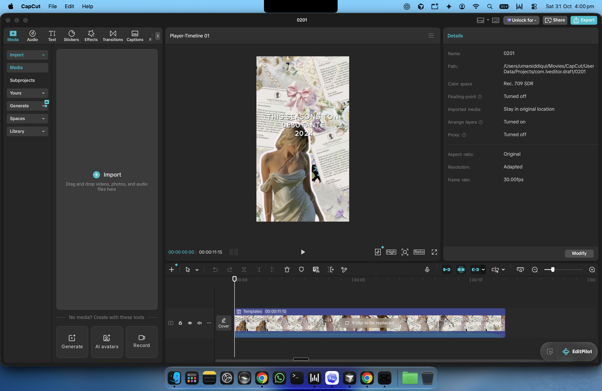
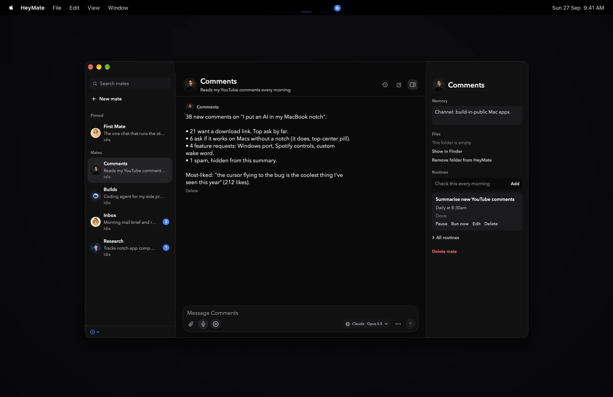
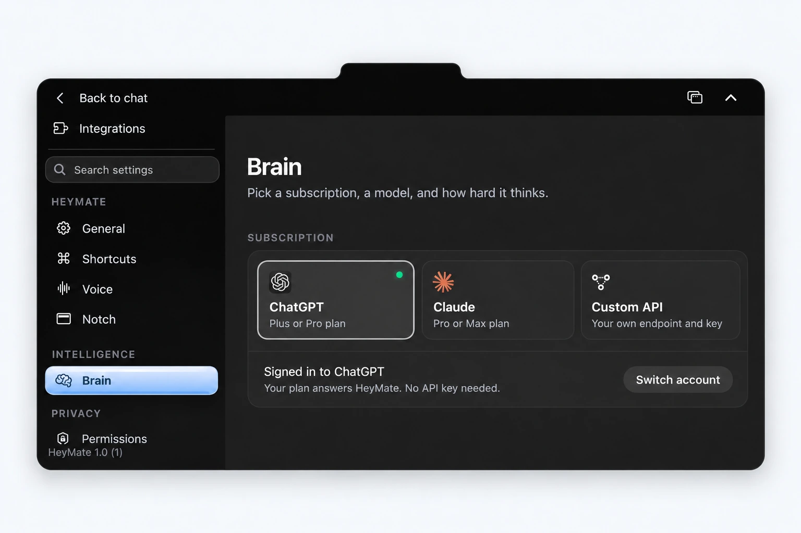
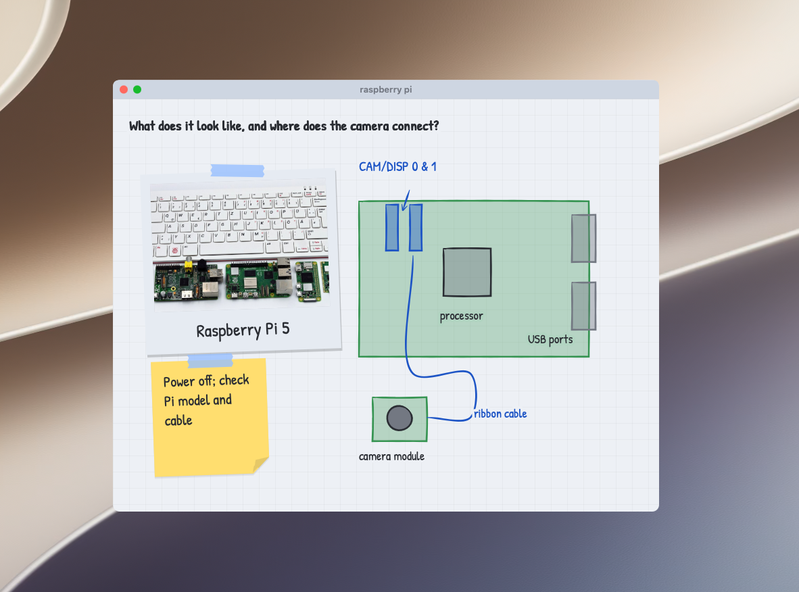
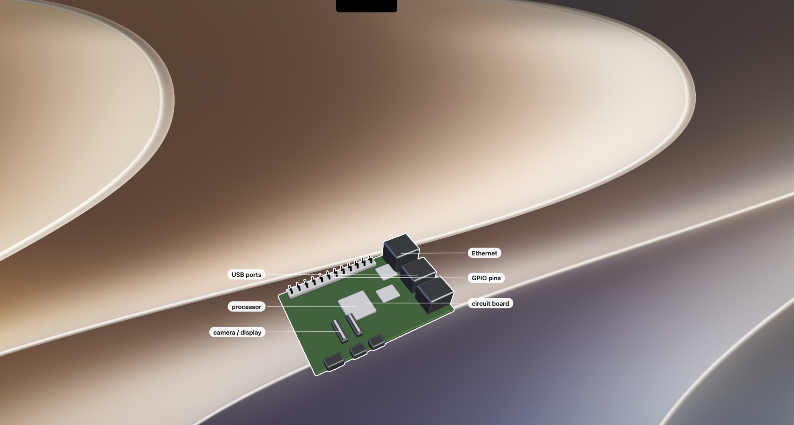

Let HeyMate drive.
Ask for help in apps like CapCut. HeyMate asks before it clicks or types.
Shake your mouse to take back control.
Ask about your screen. Get help with the next click. Give your mates the busywork.
Free & open source · macOS 14.2+ · Apple silicon & Intel

Ask for help in apps like CapCut. HeyMate asks before it clicks or types.
Shake your mouse to take back control.

Give each one a role and a personality. Delegate, then check back.
Example routine · Every Friday“Research competitors. Send me a brief every Friday.”
Hold ctrl + option. Speech runs on your Mac, with a tiny local voice back. Or bring ElevenLabs.

Sign in with ChatGPT or Claude. Or point HeyMate at any API or local model. No HeyMate subscription; your provider’s usage limits apply.
Connect the tools you use. Give your mates access to your calendar, files, and everyday work.
Explore integrations ↗Ask about your screen, or anything on your mind. HeyMate draws 2D explanations and 3D graphics right over your desktop.

2D explanations
3D graphics See an answer take shapeDrawn for the question.
A recipe becomes a sketch. A connection becomes a diagram. A board becomes a 3D model. HeyMate creates the explanation as you ask, directly over your screen.
01Ask naturally. About what’s on screen, or something you want to understand.
02Watch it take shape. Drawings, labels, and 3D graphics appear over your desktop.
03Keep asking. Follow up when you want another detail explained.
From “where do I click?” to “take it from here.”
Hold Control + Option and ask. HeyMate explains what you’re looking at and points out the next step.
Explore screen guidanceTurn on computer control and approve the actions. HeyMate can click and type; click, type, or press Escape to take over.
How computer control worksGive a mate your inbox, research, or code. Set a task or a routine, then follow its work in chat.
Meet your teamKeep ideas and results in Notes. Return to past chats, check task updates, and see your AI usage at a glance.
Explore Notes and chatsIntegrations are shared across HeyMate and all your agents. Turn one off and it's off everywhere.
Not in this list? Composio covers hundreds more web apps, and any MCP server works too.
Built-in tools for everyday Mac apps. Grant the permissions you need.
Connect through Composio with your own free key, then sign in to the apps you need. Hundreds more than shown.
Command-line tools already signed in on this Mac, plus any MCP server.
Connect more web apps with Composio, use any MCP server, or work in signed-in Chrome with the HeyMate extension. Service limits and fees may apply.
Choose the AI that answers and the voice you hear. Make your mate feel like yours.
Connect ChatGPT, Claude, or your own API in Brain. Your provider’s limits apply.
Choose a voice for local replies. On-device listening and speech stay on your Mac; AI answers use your chosen provider.
Settings images use screenshot-based artwork with cleaned backgrounds and example content.
You choose the AI and connected apps. Relevant screen context goes to that provider. Chat history stays on your Mac; computer control needs your consent.
Understand permissions ↗Privacy details ↗The latest improvements to your little desktop crew.
Free & open source. Connect your AI and start with one small task.
Need a hand getting started? ↗